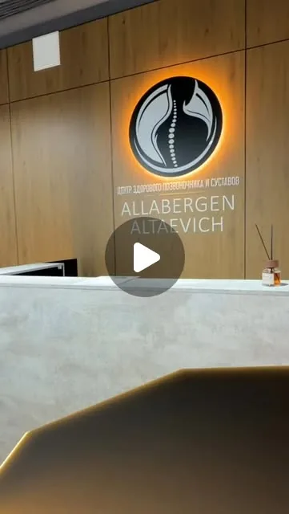
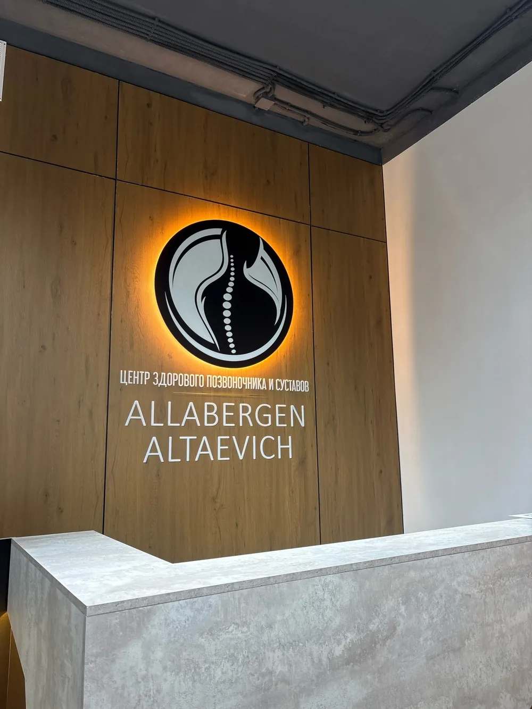
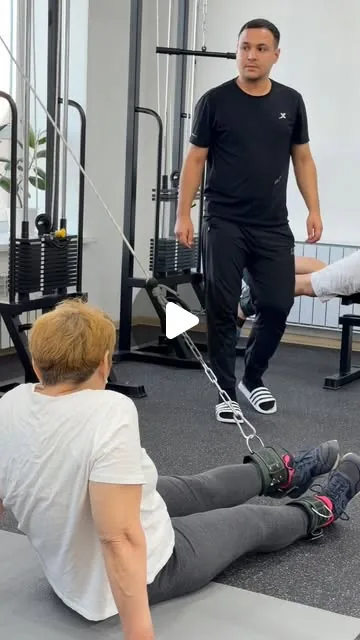
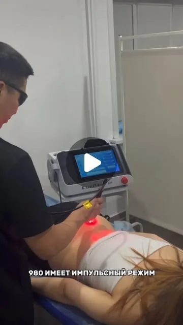

Новый центр на Набережной
С июня 2026 года центр принимает по новому адресу: ул. Набережная, 23.
Петропавловск, ЖК Esil city
Мануальная терапия, массаж, ЛФК и физиопроцедуры в одном месте. Приём по предварительной записи.

Данные 2ГИС и Instagram на 9 октября 2026 года.
Программу подбирает специалист после осмотра. Часто за один визит сочетают несколько процедур.
Ручные техники работы с позвоночником, суставами и мышцами. Основное направление центра.
Лечебный и оздоровительный массаж спины, шеи, ног. Вид и длительность подбирают индивидуально.
Лечебная физкультура в зале с блочными тренажёрами. По описанию центра, её назначают при болях в спине и шее, после травм и операций, при нарушениях осанки.
Магнитотерапия, ударно-волновая терапия (УВТ) и высокоинтенсивная лазеротерапия на аппаратах центра.
Рефлексотерапия. Её упоминают в отзывах как часть комплексного курса.
Традиционная методика с вакуумными банками. Относится к альтернативной медицине, результат не гарантируется.
Перечень составлен по профилю центра в Instagram, карточке в 2ГИС и отзывам клиентов. Цены и состав курса сообщают при записи. Имеются противопоказания.
Это темы из отзывов клиентов в 2ГИС, а не диагнозы и не обещание результата. При острой боли, травме или онемении сначала обратитесь к врачу.
Руководитель центра и ведущий специалист. В профиле в Instagram указано медицинское образование.
Сведения об образовании, сертификатах и стаже добавим после подтверждения документами.
Профиль в Instagram →Звонок, WhatsApp или форма на сайте. Подберём удобное время.
Перед процедурами проводят неврологические и ортопедические тесты, чтобы найти причину боли. Снимки МРТ или рентгена возьмите с собой.
Специалист проводит вас по нужным кабинетам. По отзывам, сеанс занимает около часа.
После приёма объяснят, что делать дальше и нужен ли курс.
Короткие ролики о центре и процедурах.

С июня 2026 года центр принимает по новому адресу: ул. Набережная, 23.

Упражнения для восстановления подвижности после травм, операций и при болях в спине.

Как проходит процедура на аппарате высокоинтенсивного лазера.
Из 66 отзывов: 62 с оценкой «пять», 1 с «четвёркой», 1 с «тройкой», 2 с «единицей».
Прошла курс массажа, спина перестала беспокоить. Теперь занимается ЛФК. Отмечает чистый светлый зал и новое оборудование.
2ГИС, октябрь 2026Ходит в центр много лет с проблемами позвоночника. Ценит комплексный подход: мануальная терапия, иглоукалывание, магнитотерапия.
2ГИС, сентябрь 2026Записали на удобное время. Сеанс длился около часа, в кабинетах чисто, специалист всё время спрашивал о самочувствии.
2ГИС, март 2026Проходил реабилитацию после травм. Благодарит за восстановление мышц и отмечает большой выбор физиоаппаратов.
2ГИС, февраль 2026Приходит на курс каждую весну и осень: массаж, физиопроцедуры, хиджама. Довольна вниманием и уровнем работы.
2ГИС, сентябрь 2026Обратилась с пяточной шпорой по совету знакомой. Пишет, что стало легче уже после первого сеанса.
2ГИС, сентябрь 2025Долго мучили головные боли, обошёл нескольких врачей. После пяти сеансов в центре, по его словам, боли ушли.
2ГИС, октябрь 2024Была дважды: с болью в пояснице после родов и с межрёберной болью. Оба раза осталась довольна результатом курса.
2ГИС, ноябрь 2025Впервые пришла на массаж и к мануальной терапии относилась скептически. После сеанса почувствовала лёгкость в спине.
2ГИС, февраль 2024Знает специалиста больше десяти лет. Отмечает, что он постоянно учится и повышает квалификацию.
2ГИС, сентябрь 2026Это краткий пересказ реальных отзывов: личный опыт авторов, результат у каждого свой. Полные тексты, включая критические, открыты в 2ГИС.
Да, приём ведётся по записи: телефон +7 707 465-27-26, WhatsApp или форма на сайте.
По отзывам клиентов, около часа. Точное время зависит от набора процедур, его назовут при записи.
Наденьте удобную одежду. Возьмите снимки МРТ, рентгена и выписки, если они есть. Сообщите о хронических заболеваниях и принимаемых препаратах.
Традиционная методика с вакуумными банками. Относится к альтернативной медицине и подходит не всем. Противопоказания специалист уточняет перед процедурой.
Стоимость зависит от вида и количества процедур. Актуальные цены сообщат при записи.
Банковской картой, наличными или по QR-коду.
Петропавловск, улица Набережная, 23, ЖК Esil city. Вход с улицы, над дверью вывеска Allabergen Altaevich. Рядом есть парковки.
Оставьте имя и телефон. После отправки откроется WhatsApp с готовым сообщением в центр. Медицинские данные указывать не нужно.
Или позвоните: +7 707 465-27-26
Адресг. Петропавловск, ул. Набережная, 23
ЖК Esil city, Набережный микрорайон
Телефон и WhatsApp+7 707 465-27-26
Instagram@allabergen_altaevich
ГрафикПо предварительной записи, начало приёма в 10:00. Точный график по дням нужно уточнить.
ОплатаКартой, наличными, по QR-коду
Открыть в 2ГИС →